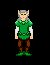
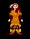

Referenced : Shar's website and Seville's Page .
 City Dwellers
City Dwellers
City Dwellers are the most common race in the Kingdom of Drakkar. An all-purpose
character, human in appearance, they enjoy socializing and the hustle and bustle of city
life. City Dwellers are apt to be strong and to have very good luck, which they need given
their love for gambling.
Able to roll 18 in all stats

Forest Dwellers
Forest Dwellers are tall, slim, humanoids with pointed ears. They are very elegant and
delicate in appearance, and speak in a melodious tongue. They tend to be agile and
extremely charismatic, with high intelligence. Some say that when their voices lift in
song, the trees around them are apt to tremble at their beauty.
Able to roll 19 Charisma and 17 Luck max
 Mountain Dwellers
Mountain Dwellers
Mountain Dwellers are short, stocky, hardy individuals with leather skin. They have good
constitutions and are very strong. They tend to have terrible luck but start out with more
gold pieces than any other race. And their skills as fighters keep their sacks full.
Able to roll 19 Strength and 17 Charisma max
 Outcasts
Outcasts
Outcasts, as the name implies, are shunned by most other races. Long ago a mark was placed
upon every Outcast's face so that all might know to avoid them, but everyone has mellowed
with the passage of time. The legends imply that the reason for this marking goes back to
the days when the Drakkar's power was great, and mortal traitors bent to her will.
Outcasts' strength and weaknesses have long been hidden due to their secretive and
solitary existence, but they are rumored to have great strength but little luck.
Able to roll 19 for Strength, Constitution and Agility but only 16 max in Charisma
Underground Dwellers
Underground dwellers are extremely short and somewhat childlike in appearance. But don't
underestimate them, because they are great fun once you get a few ales down them. In
addition, they are extremely agile and have strong constitutions. As with the Outcasts,
Lady Luck rarely smiles on the Underground Dweller.
Not sure what max stats, but a high Luck roll is hard to get

 Woodlands Dwellers
Woodlands Dwellers
The Woodlands Dweller is a racial blend of City Dweller and Forest Dweller, being neither
one nor the other, but something both in between and unique. They tend to have good
agility, intelligence and willpower. Many of the great Mentalist of Drakkar are Woodlands
Dwellers.
Able to roll 19 Intelligence and 17 strength max